Trends Discovered
Euro Summer
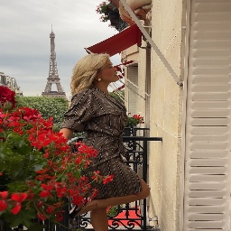

 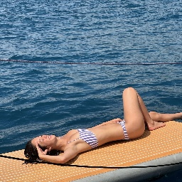
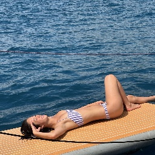

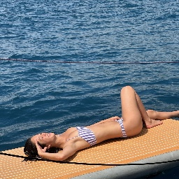
The "Euro Summer" trend is all about embodying the effortless chic and relaxed elegance found on the sun-soaked streets and beaches of Europe's most fashionable destinations. Think lightweight, flowy dresses in neutral tones, classic Breton stripes, and sun hats that blend style with functionality. This trend embraces natural fabrics like linen and cotton, ideal for keeping cool while looking effortlessly put together. Accessories are minimal yet impactful, with woven bags, statement sunglasses, and delicate jewelry adding the perfect finishing touches. Whether strolling through a quaint Mediterranean town or lounging by the sea, the Euro Summer aesthetic is a timeless blend of comfort, sophistication, and understated glamour.
White Everything!!!!
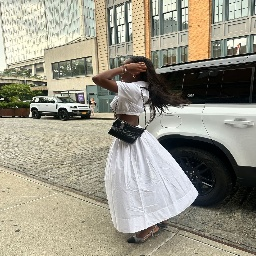


 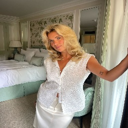
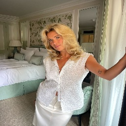
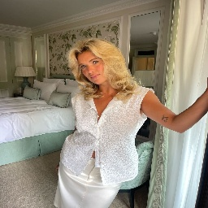
White Everything is the epitome of elegance and simplicity, embracing the versatility and timelessness of an all-white wardrobe. This trend highlights the effortless sophistication that comes with wearing white from head to toe, perfect for both summer days and chic evenings. Whether it's a flowing dress, tailored shorts, or a crisp blouse, white adds a touch of freshness and modernity to any outfit. This trend is not only about making a fashion statement but also about embracing a minimalist aesthetic that exudes confidence and purity.
Corporate, Casual, and Chic


 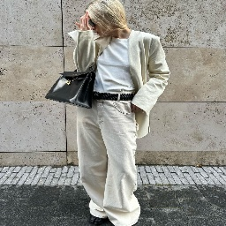
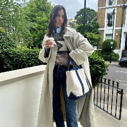
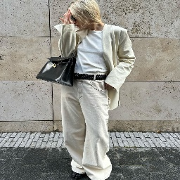
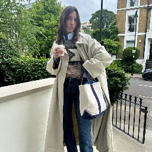


The Corporate, Casual, and Chic trend seamlessly blends professional attire with casual comfort, creating looks that are both polished and relaxed. Imagine oversized blazers paired with relaxed trousers or a crisp button-down worn with sleek jeans. This trend is perfect for those who want to stay stylish in the office while being ready for a spontaneous outing after work. It’s all about balance, where sharp tailoring meets soft, cozy fabrics.
The PERFECT Black Dress
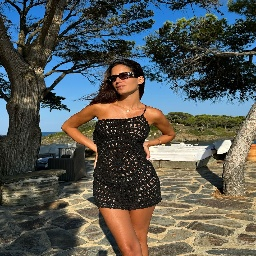


 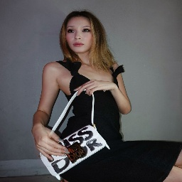
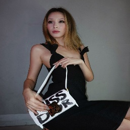

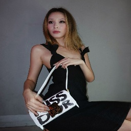